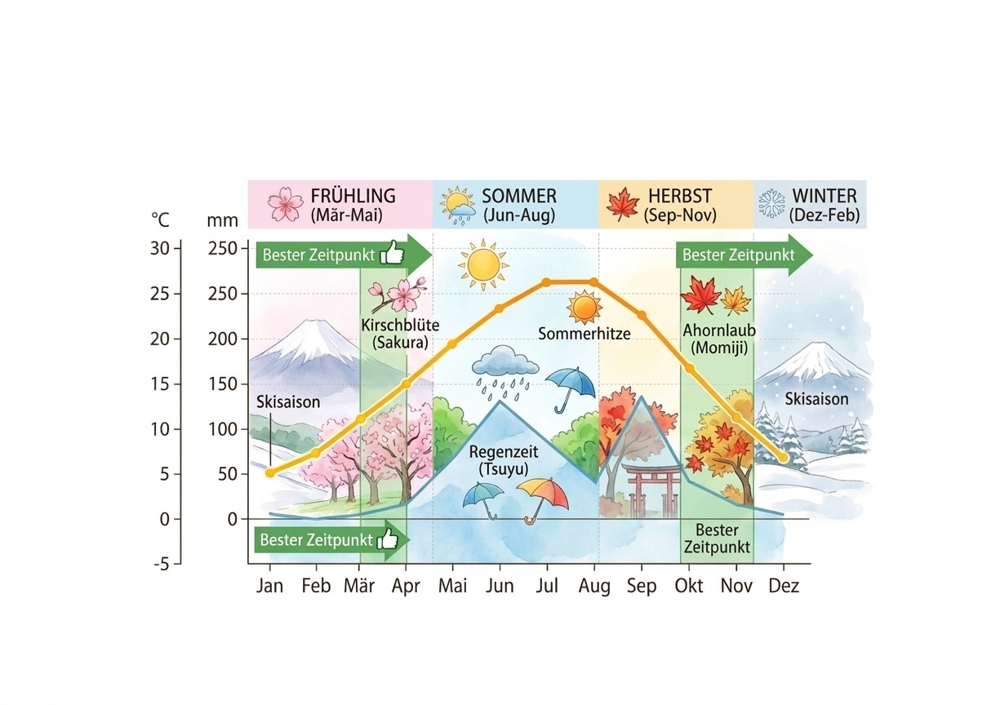

Ein fantastisches fernöstliches Erlebnis
Mt. Fuji aus verschiedenen Perspektiven
Entdecken Sie die faszinierende Landschaft rund um den Fujiyama, zwischen traditionellem Lebensstil und futuristischen Städten. Erleben sie das Herz Japans in allen Facetten.
In folgenden Viedo sieht man ein Beispiel für die malerischen Routen die man rund um den Fujiyama zu Fuß genießen kann. Es gibt auch viele Eisenbahnlinien die einem die schönsten Seiten des Berges zeigen, und zu vielen Aktivitäten und Ortserkundungen einladen.
Einzigartige Anblicke und unvergessliche Erlebnisse können auch abseits der Touristen Hot Spots erlebt werden. Mut zum entdecken wird belohnt und man findet sogar das ein oder andere einzigartige Mitbringsel. Ob Maneki Neko, selbst gebauter Game Boy, sebkst geschnitzte Essstäbchen oder leckere Mochi frisch handegmacht vom Mochi Meister, alles verkörpert den besonderen japanischen Flair
Fünf Blickwinkel des Fjuiyama
Majestätische, schneebedeckte Gipfel, moderne Straßenzüge und heilige Pfade ziehen jedes Jahr Millionen von Reisenden in die magische Region rund um den Berg Fuji. Ob am Kawaguchi-See, bei den Chureito-Pagoden oder in Hakone, die Natur begeistert mit ihrer außergewöhnlichen Schönheit, mystischen Schreinen und einzigartigen Landschaften. Während manche Besucher nach Ruhe in heißen Onsen-Quellen suchen, locken andere Orte mit spektakulären Wander- und Fotomöglichkeiten oder beeindruckenden Sonnenaufgängen vom Kraterrand. Die Auswahl der schönsten Ausflugsziele Japans ist natürlich subjektiv, doch diese Region schafft es regelmäßig auf die Spitzenplätze internationaler Rankings. Sie vereint fünf spiegelnde Seen, uralte Kulturschätze und eine unvergleichliche Atmosphäre, die Reisende aus aller Welt begeistert. Wer von einem perfekten Japan-Abenteuer träumt, sollte diese außergewöhnlichen Naturparadiese unbedingt auf seine Reiseliste setzen.
Beste Reisezeiten für Japan

Farbenfrohe Blüten, leuchtendes Herbstlaub und glitzernder Schnee ziehen jedes Jahr Millionen von Reisenden in die faszinierenden Jahreszeiten Japans. Ob im milden Frühling, zur goldenen Laubfärbung oder im Winter. Jede Saison begeistert mit ihrer außergewöhnlichen Schönheit, traditionellen Festen und einzigartigen Klimazonen. Während manche Besucher nach der ikonischen Kirschblüte im April suchen, locken andere Monate mit spektakulären Sommer-Feuerwerken und Strandurlauben oder beeindruckenden Winterlandschaften in den Bergen. Die Auswahl der besten Reisezeit für Japan ist natürlich subjektiv, doch der milde Herbst schafft es regelmäßig auf die Spitzenplätze internationaler Rankings. Er vereint angenehmes Wetter, tiefrote Wälder und eine unvergleichliche Atmosphäre, die Reisende aus aller Welt begeistert. Wer von einem perfekten Kulturabenteuer träumt, sollte diese außergewöhnlichen Saison Highlights unbedingt auf seine Reiseliste setzen.
- Lieber außerhalb der Hauptsaisonen buchen um der Sommerhitze und der Regenzeit zu entgehen. Auch wenn man eventuell die belibtesten Anblicke verpasst wird er Trip angenehmer und günstiger.
- Lokale Anbieter für einzigartige Erlebnisse ohne Touristenansturm recherchieren lohnt sich. So unterstützt man die kleinen Handwerker und Händler und bekommt Einblicke außerhalb des Mainstream.